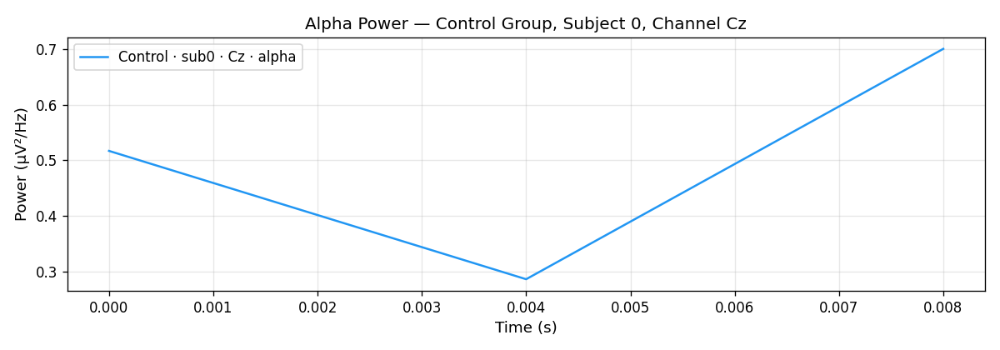
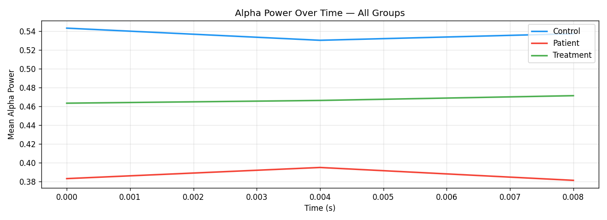
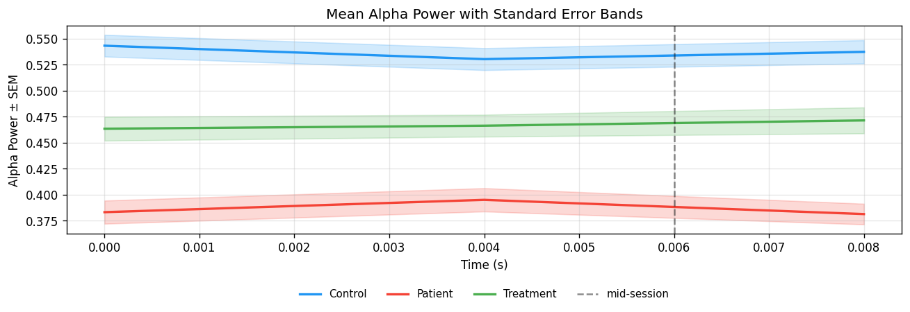
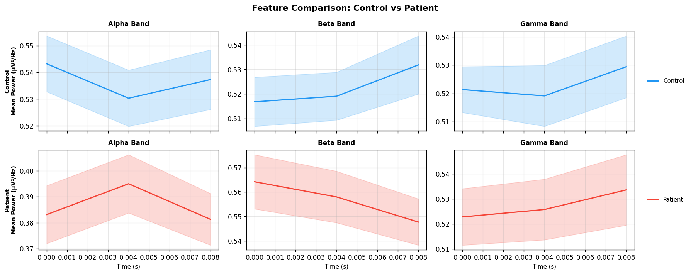
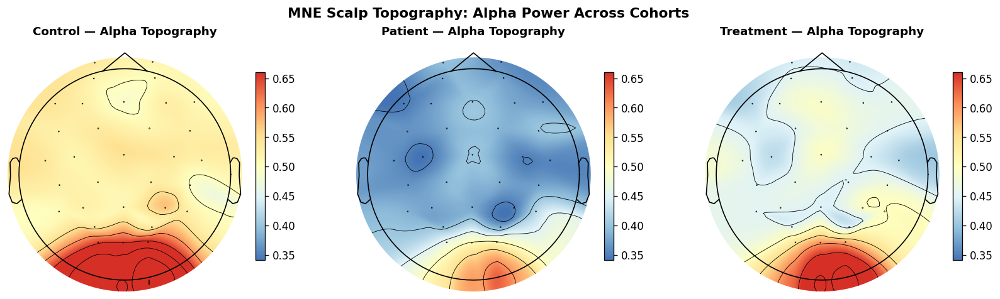
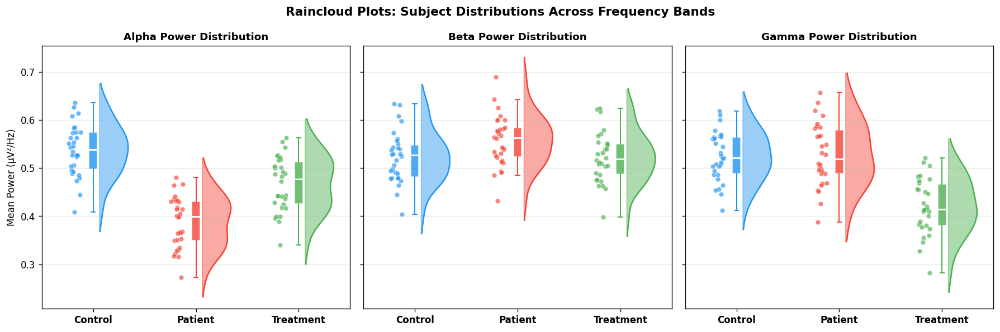
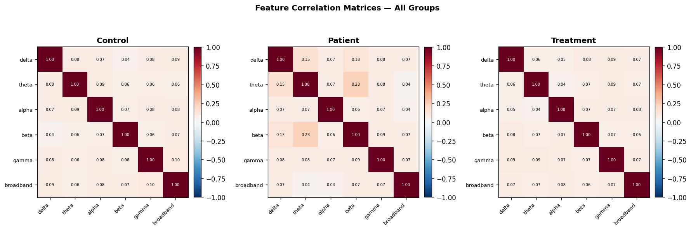
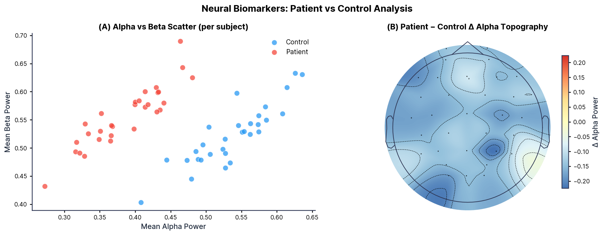

Data visualization bridges high-dimensional numerical arrays and physiological understanding.
This guide operates directly on the shared 5D dataset loaded from ../day_1/data/neural_data.npy (shape 3×3×30×32×6),
delivering precise takeaways for every plot configuration.
Figure Configuration Defaults (rcParams)
Publication-grade graphics begin with consistent global defaults. Rather than manually tweaking fonts, tick widths, and margins on every figure, establish a reusable configuration helper that applies system-wide rcParams.
def setup_publication_style(): """Configures global Matplotlib defaults for publication figures.""" plt.rcParams.update({ "font.family" : "sans-serif", # Primary font family category "font.sans-serif" : ["Inter", "Helvetica", "Arial"], # Font fallback stack "axes.spines.top" : False, # Hide top spine boundary "axes.spines.right" : False, # Hide right spine boundary "axes.linewidth" : 1.2, # Line thickness for left/bottom spines "axes.edgecolor" : "#2E3654", # Dark slate border color "axes.labelcolor" : "#1E293B", # Axis label text color "axes.titlesize" : 12, # Subplot title font size "axes.titleweight" : "bold", # Subplot title font weight "axes.labelsize" : 11, # X/Y axis label font size "axes.labelweight" : "medium", # Axis label font weight "xtick.major.width" : 1.2, # X-axis tick line thickness "ytick.major.width" : 1.2, # Y-axis tick line thickness "xtick.labelsize" : 9, # X-axis tick label font size "ytick.labelsize" : 9, # Y-axis tick label font size "figure.titlesize" : 14, # Main super-title font size "figure.titleweight" : "bold", # Main super-title font weight "figure.dpi" : 150, # On-screen render DPI "savefig.dpi" : 150, # High-resolution export DPI "savefig.bbox" : "tight", # Strip redundant outer whitespace })
Takeaway: Set axes.spines.top = False and axes.spines.right = False globally to eliminate non-data ink. Use savefig.bbox = "tight" to prevent title clipping on export.
Single Time-Series Plotting
Visualizing an individual electrode channel trajectory. Extracting channel Cz (index 9) alpha power for Control Subject 0 across time points.
ts = data[0, :, 0, 9, 2] # Control · sub0 · Cz · alpha fig, ax = plt.subplots(figsize=(10, 3.5)) ax.plot(t_axis, ts, color=COLORS[0], lw=1.5, label="Control · sub0 · Cz · alpha") ax.set_xlabel("Time (s)"); ax.set_ylabel("Power (μV²/Hz)") ax.set_title("Alpha Power — Control Group, Subject 0, Channel Cz") ax.legend(); ax.grid(True, alpha=0.3)

Takeaway: Convert sample frame indices into physical time units (t_axis = np.arange(T) / sampling_hz). Prefer object-oriented axes (ax.plot) over procedural module calls.
Multi-Group Time-Series Overlay
Overlaying grand-average cohort signals (Control, Patient, Treatment) to evaluate group-level temporal differences.
fig, ax = plt.subplots(figsize=(11, 4))
for g in range(G):
ts_g = data[g, :, :, :, 2].mean(axis=(1, 2)) # Mean over subjects & channels
ax.plot(t_axis, ts_g, color=COLORS[g], lw=2, label=gnames[g])
ax.set_xlabel("Time (s)"); ax.set_ylabel("Mean Alpha Power")
ax.set_title("Alpha Power Over Time — All Groups")
ax.legend(); ax.grid(True, alpha=0.3)

Takeaway: Store an explicit color palette array (e.g. COLORS = ["#2196F3", "#F44336", "#4CAF50"]) to enforce fixed cohort colors across all figures in your study.
Confidence Bands (fill_between ±SEM)
Communicating statistical variance. Shading standard error of the mean (SEM across subjects) reveals whether cohort trajectories are reliably separated.
for g in range(G):
mu, sem = _mean_sem(g, fi=2)
ax.plot(t_axis, mu, color=COLORS[g], lw=2, label=gnames[g])
ax.fill_between(t_axis, mu - sem, mu + sem, color=COLORS[g], alpha=0.20)
ax.axvline(x=T / (2*hz), ls="--", color="k", alpha=0.45, label="mid-session")
# Place legend at the bottom below the plot frame
ax.legend(loc="upper center", bbox_to_anchor=(0.5, -0.22), ncol=4, frameon=False)

Takeaway: Position legends at the bottom below the plot frame (bbox_to_anchor=(0.5, -0.22)) so labels never obscure signal trajectories or shaded SEM confidence ribbons.
Subplots Grid Layout
Organizing multi-feature matrices across groups into a synchronized subfigure grid using plt.subplots(2, 3, sharex=True).
fig, axes = plt.subplots(2, 3, figsize=(15, 6), sharex=True) feat_cols = [("Alpha", 2), ("Beta", 3), ("Gamma", 4)] for row, g in enumerate([0, 1]): for col, (fname, fi) in enumerate(feat_cols): ax = axes[row, col] mu, sem = _mean_sem(g, fi) ax.plot(t_axis, mu, color=COLORS[g], lw=1.8, label=gnames[g]) ax.fill_between(t_axis, mu - sem, mu + sem, color=COLORS[g], alpha=0.20) ax.set_title(f"{fname} Band", fontsize=10, fontweight="bold") # Position legend outside plot area to avoid obscuring signal curves if col == 2: ax.legend(loc="center left", bbox_to_anchor=(1.04, 0.5), frameon=False)

Takeaway: Always place legend boxes outside the plot area (using bbox_to_anchor=(1.04, 0.5)) so labels never obscure signal trajectories or confidence ribbons.
MNE Scalp Topography (mne.viz.plot_topomap)
Projecting 32-channel electrode power onto anatomically accurate 2D scalp topomaps using MNE-Python and standard 10-20 sensor montages.
import mne from matplotlib.colors import LinearSegmentedColormap # Benedikt Ehinger's EEG Topographic Colormap (becp) colors = [(0.2706, 0.4588, 0.7059), (0.5686, 0.7490, 0.8588), (0.8784, 0.9529, 0.9725), (1.0000, 1.0000, 0.7490), (0.9961, 0.8784, 0.5647), (0.9882, 0.5529, 0.3490), (0.8431, 0.1882, 0.1529)] cmap_becp = LinearSegmentedColormap.from_list("becp", colors, N=256) # Create MNE Info with standard 10-20 montage info = mne.create_info(ch_names=chnames, sfreq=hz, ch_types="eeg") info.set_montage(mne.channels.make_standard_montage("standard_1020")) fig, axes = plt.subplots(1, 3, figsize=(14, 4)) vmax = max(data[g, :, :, :, 2].mean(axis=(0, 1)).max() for g in range(G)) vmin = min(data[g, :, :, :, 2].mean(axis=(0, 1)).min() for g in range(G)) for g in range(G): alpha_power = data[g, :, :, :, 2].mean(axis=(0, 1)) # (32,) channel mean im, _ = mne.viz.plot_topomap( alpha_power, info, axes=axes[g], show=False, cmap=cmap_becp, vlim=(vmin, vmax) ) axes[g].set_title(f"{gnames[g]} — Alpha Topography") fig.colorbar(im, ax=axes[g], shrink=0.75, pad=0.04)

Takeaway: Prefer MNE topomaps over rectangular heatmaps for spatial channel data — polar 2D head geometry provides true anatomical spatial interpolation.
Raincloud Distributions (Cloud + Box + Rain)
Replacing bar graphs with Raincloud Plots. Combining half-KDE density shapes, narrow boxplots, and raw data scatter points delivers complete distribution transparency.
import scipy.stats as stats for g in range(G): sub_vals = data[g, :, :, :, fi].mean(axis=(0, 2)) # per-subject mean color = COLORS[g] # 1. Cloud: Half-KDE density plot kde = stats.gaussian_kde(sub_vals) y_grid = np.linspace(sub_vals.min() - 0.04, sub_vals.max() + 0.04, 100) density = (kde(y_grid) / kde(y_grid).max()) * 0.28 ax.fill_betweenx(y_grid, g + 0.06, g + 0.06 + density, color=color, alpha=0.45) # 2. Umbrella: Narrow box plot ax.boxplot(sub_vals, positions=[g], widths=0.08, patch_artist=True, boxprops=dict(facecolor=color, alpha=0.8), medianprops=dict(color="white", lw=1.8)) # 3. Rain: Jittered raw subject scatter points jitter = RNG.uniform(-0.06, 0.06, size=len(sub_vals)) ax.scatter(g - 0.18 + jitter, sub_vals, color=color, alpha=0.65, s=28)

Takeaway: Bar charts hide multimodal shapes and subject sample sizes. Rainclouds reveal true raw subject data points alongside summary statistics.
Annotated Correlation Matrix
Evaluating feature co-activation by computing Pearson correlation matrices (np.corrcoef) across frequency bands with dynamic contrast text annotations.
for g in range(G):
mat = data[g].reshape(-1, F)
corr = np.corrcoef(mat.T)
im = axes[g].imshow(corr, cmap="RdBu_r", vmin=-1, vmax=1)
# Overlay annotated text with dynamic contrast
for i in range(F):
for j in range(F):
col = "w" if abs(corr[i, j]) > 0.60 else "k"
axes[g].text(j, i, f"{corr[i,j]:.2f}", ha="center", va="center", color=col)

Takeaway: Always center diverging colormaps (e.g. RdBu_r) at zero with vmin=-1, vmax=1 for correlation matrices, and switch text color dynamically for contrast.
Journal-Ready Figure & MNE Delta Topomap
Assembling a two-panel publication figure combining subject-level scatter relationships in Panel A with an MNE Patient − Control delta scalp topomap in Panel B.
setup_publication_style() fig, (ax1, ax2) = plt.subplots(1, 2, figsize=(13, 5)) # Panel A: Alpha vs Beta scatter per subject for g in [0, 1]: sub_alpha = data[g, :, :, :, 2].mean(axis=(0, 2)) sub_beta = data[g, :, :, :, 3].mean(axis=(0, 2)) ax1.scatter(sub_alpha, sub_beta, c=COLORS[g], alpha=0.72, s=65, label=gnames[g]) # Panel B: Patient - Control Delta Topomap (Benedikt Ehinger becp colormap) diff_alpha = data[1, :, :, :, 2].mean(axis=(0, 1)) - data[0, :, :, :, 2].mean(axis=(0, 1)) vlim = np.abs(diff_alpha).max() im, _ = mne.viz.plot_topomap( diff_alpha, info, axes=ax2, show=False, cmap=cmap_becp, vlim=(-vlim, vlim) ) ax2.set_title("(B) Patient − Control Δ Alpha Topography") fig.colorbar(im, ax=ax2, shrink=0.75, pad=0.04, label="Δ Alpha Power")

Takeaway: On difference topomaps (Patient - Control), set symmetric limits vlim=(-vlim, vlim) with a zero-centered diverging colormap so blue indicates power reduction and red indicates power enhancement.